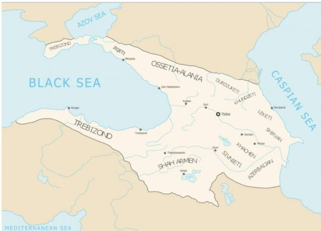
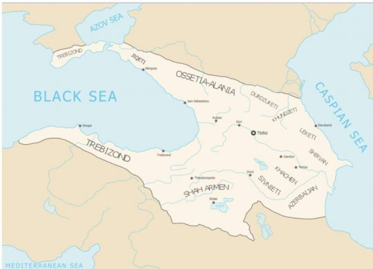

1179 წელს მეფე გიორგიმ თამარი თანამოსაყდრედ გამოაცხადა. 1184 წელს, მეფე გიორგის გარდაცვალების შემდეგ, ქვეყანაში რთული ვითარება შეიქმნა; ფეოდალურმა არისტოკრატიამ დაიწყო ბრძოლა დაკარგული პოლიტიკური პრივილეგიების აღსადგენად. 1185 წელს გავლენიან ფეოდალთა ერთმა ჯგუფმა თამარს, მისი სურვილის წინააღმდეგ, შერთო ანდრეი ბოგოლიუბსკის შვილი იური, რომელიც ქართულ წყაროებში ცნობილია „გიორგი რუსის“ სახელით. ორი-ორნახევარი წლის შემდეგ თამარი განქორწინდა და იური საქართველოდანაც განდევნეს. მეფე თამარი მეორედ დაქორწინდა დაახლოებით 1189 (ან 1187) წელს დავით სოსლანზე. თამარის დროს საქართველო კავკასიის უძლიერეს სახელმწიფოდ იქცა. ისტორიკოსთა ერთი ნაწილის აზრით, ეს ძლიერება არ ემყარებოდა ქვეყნის შინაგან საწარმოო ძალთა განვითარებას, გაერთიანებული ფეოდალური მონარქიის ეკონომიკური ძლიერების ძირითად წყაროს სამხედრო ნადავლი და ხარკი შეადგენდა და ქვეყნის გაერთიანება ეფემერული ხასიათისა იყო. ისტორიკოსთა მეორე ნაწილის აზრით, გაერთიანებული საქართველოს სიძლიერე შესაფერის სოციალურ-ეკონომიკურ ბაზისს ემყარებოდა.
თამარის მეფობის პერიოდში რამდენიმე მნიშვნელოვანი ბრძოლა გაიმართა, რომელთაგან განსაკუთრებით აღსანიშნავია 1195 წლის შამქორისა და 1203 წლის ბასიანის ბრძოლები.